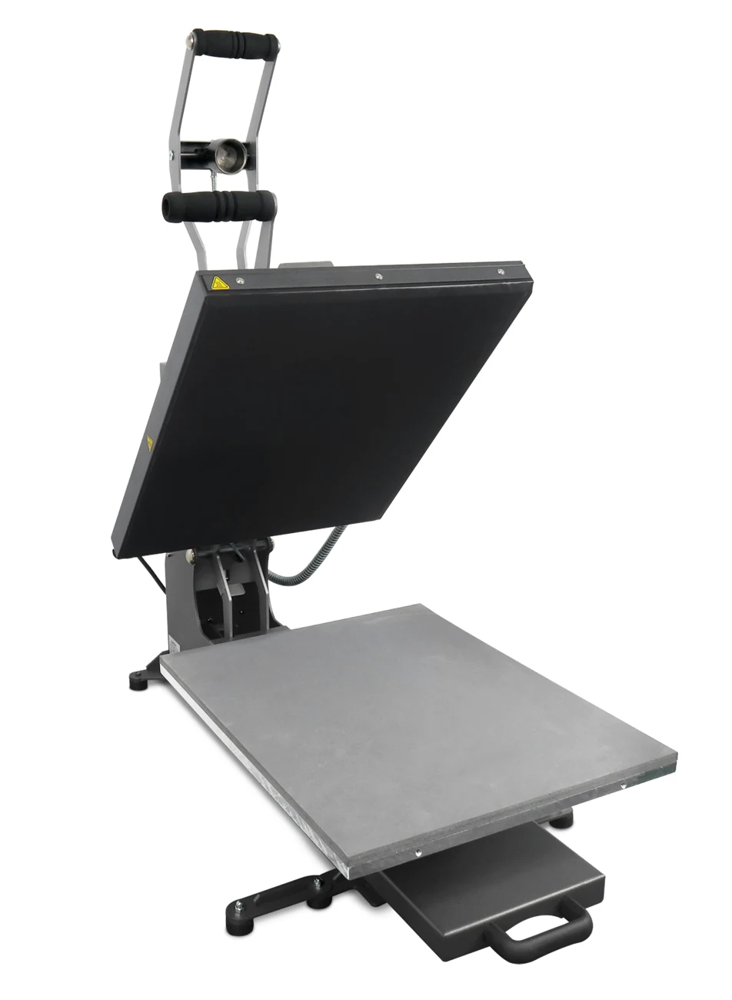
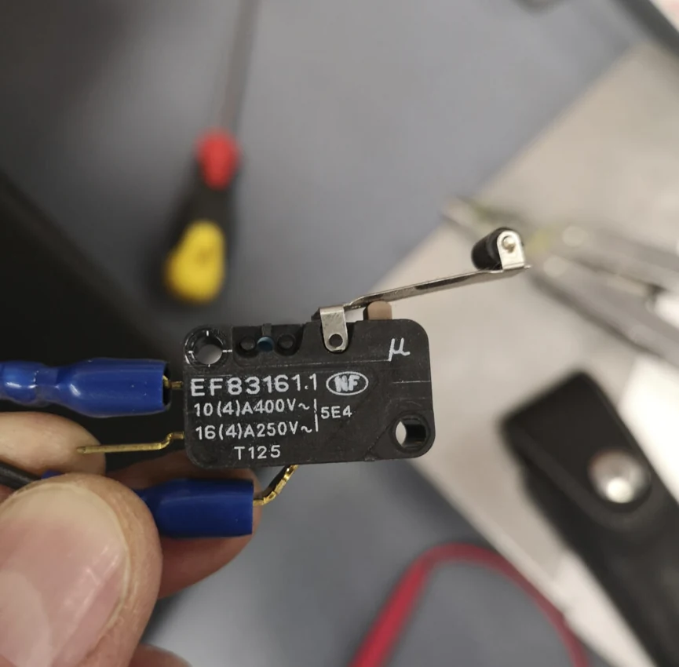
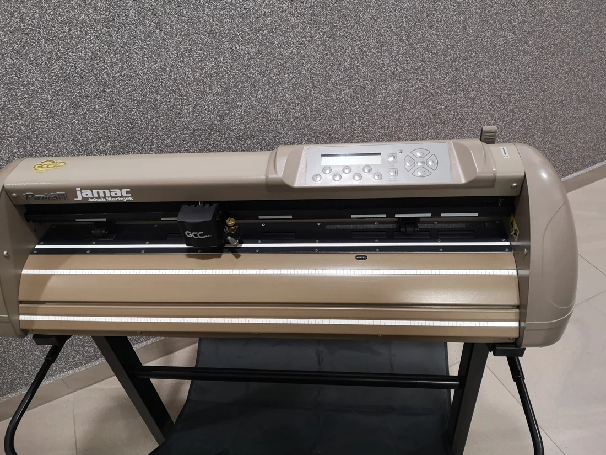

DLA TYCH, KTÓRZY TWORZĄ NADRUKI
Dobry nadruk
zaczyna się tutaj.
Od pierwszej folii po własną pracownię. Materiały DTF, folie flex i flock, urządzenia oraz wsparcie ludzi, którzy znają ten sprzęt.
Lepszy warsztat.

Twój projekt.
Materiały do nadrukówDTF, flex, flock i sublimacja
Pomoc w wyborzeDobierz produkt do zastosowania
Zaplecze serwisoweWsparcie także po zakupie
Sprzęt na wynajemGdy potrzebujesz go na chwilę
DOBRZE TRAFIŁEŚ
Czego potrzebujesz?
Z OFERTY JAMAC
Do Twojej codziennej pracy.
Konkretne produkty.
Wszystko, co ważne, od razu.
Nie znaleźliśmy tego w podglądzie.
Sprawdź inną nazwę lub przejrzyj pełny katalog JAMAC.
Przejdź do aktualnego sklepuCeny netto. Aktualne ceny i dostępność sprawdzisz w sklepie JAMAC.
ZACZNIJ OD ZASTOSOWANIA
Masz pomysł.
Dobierzmy materiały.
Wybierz, co chcesz robić. Pokażemy Ci, od której części oferty zacząć.
Nadruki DTF
od materiału do efektu.
Folia, tusz i proszek. Skompletuj materiały do wykonywania transferów DTF.
Zobacz materiały DTFJAMAC TO TAKŻE SERWIS
Sprzęt ma pracować.
My wiemy, jak mu pomóc.
Prasy transferowe, plotery tnące i drukarki do sublimacji. Opisz problem, a wspólnie ustalimy kolejny krok.
Zapytaj o serwis
Techniczne wsparcie. Ludzki kontakt.
WYPOŻYCZALNIA SPRZĘTU
Dodatkowe zlecenie?
Nie wszystko musisz kupować.
Potrzebujesz prasy lub plotera na konkretny projekt? Sprawdź ofertę wypożyczalni i zapytaj o dostępny termin.
Sprawdź możliwości wynajmuDOBRY WYBÓR ZACZYNA SIĘ OD ROZMOWY
Nie musisz znać się na wszystkim.
Powiedz, co chcesz tworzyć. Pomożemy dobrać resztę.